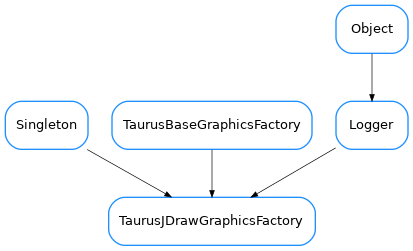

TaurusJDrawGraphicsFactory¶

-
class
TaurusJDrawGraphicsFactory(*p, **k)[source]¶ Bases:
taurus.core.util.singleton.Singleton,taurus.qt.qtgui.graphic.taurusgraphic.TaurusBaseGraphicsFactory,taurus.core.util.log.Logger